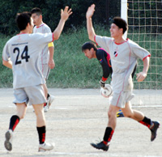
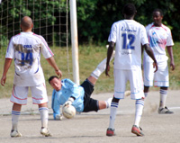
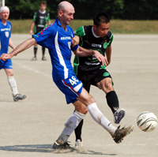

|  |
|
Toshi Noguchi Celebrates number 2.
|
'Rope a Dope' still Working for Barbarians.
OiFuto, Saturday 25th August,
It was a blistering hot day at Oi-dirt (this pitch isn’t getting any better with age) that seemed to sap the energy out of you when standing still. Barbarians were a bit tentative after such a long lay-off, especially when the first fixture saw them drawn against a younger, fitter KGFC side.
The Barbarians apprehension was soon realized to be misplaced as the defense settled into there usual solid shape, soaking up everything KGFC could throw at them. more ...
CR.
|  |
|
Lions new keeper, Orlando Torres. pulls off a smart save.
|
Lions Roar into Season 5.
OiFuto, Saturday 25th August,
Lions kick-off the Division 2 league on a hot Saturday in OiDai1, against the newly relegated Jetro. Lions had a strong 15-man squad, whereas Jetro had only 10 players.
Lions opted to start last year's top scorer Gaafar Somi, who was nursing a groin injury, but his quality in dictating the midfield was next to none, and was evident from the vast spells of passing that Lions enjoyed with Jetro kept at bay.
Lions almost scored in the first 3 minutes when Ahmed Gaafar outran the defence, only to see his shot pushed away to a corner. Soon afterwards, Ahmed was again close to scoring, this time the ball bouncing off the post back into the keeper's hands. more ...
HS.
|  |
|
Keita Narama smashes a shot against the bar in the season opener.
|
Kick Off
Hibs Edge Vags in Opening Match
OiFuto, Saturday 25th August,
A good, hard fought, competitive game of football to start the season. The one thing confirmed for the Vags today is that we are comfortable in the first division. Over the piece the Hibs probably just edged it and the Vags flagged a bit in the last 15 minutes but it was touch and go for most of the game. more from Vags...
RS.
We had the honor of welcoming the Vagabonds to the first division this year, and weren't sure what to expect. Word on the street was that they had a lot of help from BFC players last season, which is obviously no longer available...more from Hibs...
JA.
TML Season 5 Bigger & Better (Hopefully)
Tokyo, August 17th,
Well it's just 8 days away now, till the opening matches of TML's season 5 which promises to be the biggest & best yet. Season 5 will see the League increasing to 3 Divisions with a total of 28 teams (4 more than last year) 5 of which are new teams. These new teams are joining with the lower half of last years Div 2 to form the new Division 3. All teams will now play the other teams in their division twice. Divisions 2&3 have been limited to 8 teams as even this will put a huge strain on resources (grounds). Unfortunately 6 teams had to be turned away from joining the league, although we hope to be able to allow them to play in the future.
The season will Kick off on Sat 25th August and run through till June next year all going well, but all players & supporters are urged to help their team captains & TML by supplying necessary documents to help in the booking of grounds, otherwise we may become known as the Misato Metropolis League!!
FJ.
|